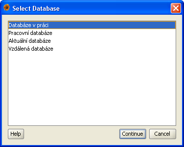
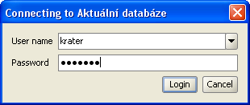
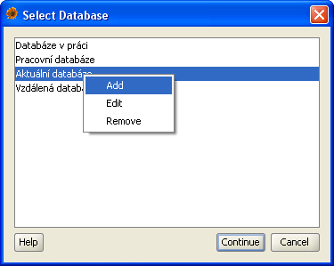
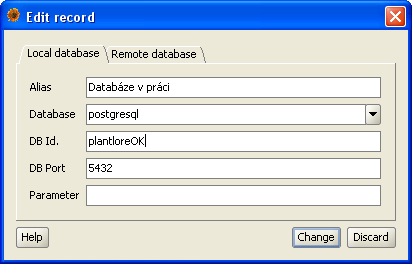
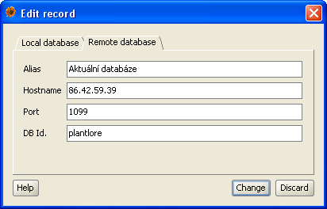
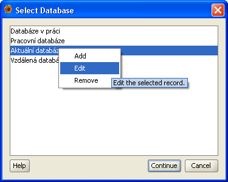
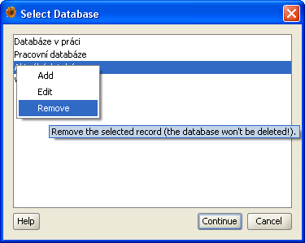

Before you start working with Plantlore, it is necessary to connect to the database you would like to work with.
The process has two steps:

After installing Plantlore you have two options depending on how you would like to use Plantlore:
After some time your list of databases can be similar to the one at the picture. Plantlore will automatically select database you've chosen during the previous session. Choose one of the databases from the list and press the Continue button.
For gaining access to the database you have to provide your username and password in order to authenticate. If you are logging in for the first time, use login name and password you have chosen when installing Plantlore. For security reasons, new user name and password can only be assigned by an Administrator. Weak passwords are often used even by experienced users, therefore the assignment of passwords is left to the Administrator.

Plantlore remembers several recently used login names; you can choose one from the list or provide a different one. Plantlore doesn't save passwords and doesn't offer them automatically. After you provide the authentication data, press the Login button.
After pressing the Login button, Plantlore will try to connect to the selected database using your authentication data. The connection can take some time, especially if you are connecting to a remote database.
In case the login fails for some reason, you will be notified by a short message. Otherwise Plantlore will display the basic Overview.
If you wish to connect to a different database than the one you (or someone else) created on your computer, you have to create new record describing the database, its location and settings.
The context menu allowing you to add, edit or delete a record is accessible via the right mouse click. Choose Add record and click on it.

The database description is divided into two parts.
The direct connection requires the following parameters:
| Name | Meaning |
|---|---|
| Alias | Alias is a short string that will be presented to the User. It allows fast and simple recongition of the database by the User. The string should be brief. |
| Database engine | There is a wide variety of database engines that allow you to work with databases, tables, users, queries and data very easily. Every database engine can store several different databases - databases with different structure and contents. The best known database engines are Oracle, MSSQL, MySQL, Postgre and Firebird. Plantlore can work with some of these database engines, but it is necessary to specify with which it should work so that the Program can communicate with it properly. Plantlore is delivered and tested with Postgre. |
| DB Identifier | The database engine may contain several different databases with different structure and contents. Databases that Plantlore works with have their own specific structure. So as to know to which database you would like to connect, you must specify its identifier within the database engine. The identifier is usually a short name. |
| DB Port | Database engines can be contacted on a certain port. Every database engine may have a different port number. In order to know where to contact the database engine, you have to supply the port where the database engine listens. Port is a number from 0 to 65.535 and ports above 1.024 are commonly used. Lower ports are usually reserved for well known services (such as FTP, HTTP, etc.). The default port of PostgreSQL database engine is 5432. |
| Parameter |
The database engine may require some additional settings.
For instance you have to set the encoding explicitly.
This parameter is used to the proper additional configuration
of the database connection.
Postgre does not require any additional parameter.
Note: the parameter is a value passed in the JDBC connections string right after the exclamation mark "?" |
In the picture there you can see how the local connection may look like. We are connecting to the database called "plantloreOK" that is stored within the database engine "PostgreSQL" that listens on the port "5432". There is no additional paramater.

Parameters required for the remote connection - to the remote Plantlore Server in this case. It is the Server that will mediate the creation of the connection:
| Name | Meaning |
|---|---|
| Alias | Alias is a short string that will be presented to the User. It allows fast and simple recongition of the database by the User. The string should be brief. |
| Host | This parameter identifies the computer where the Server is running - either by its name or IP address. Every computer connected to a network must have its own unique IP address so that it can be identified in the network. IP address is a sequence of four numbers separated with dots, for instance "192.168.0.247". Some computers may have also a name, such as "data.home.net". You can use both ways to identify the remote computer. |
| Port | The port specifies where the remote Server listens. Port is a number from 0 to 65.535 and ports above 1.024 are commonly used. Lower ports are usually reserved for well known services (such as FTP, HTTP, etc.). The default port is 1099. |
| DB identifier | The database engine may contain several different databases with different structure and contents. Databases that Plantlore works with have their own specific structure. So as to know to which database you would like to connect, you must specify its identifier within the database engine. The identifier is usually a short name. |
Let us see how the remote connection parameters may look like. In the picture there you can see that we are connecting to a remote database named "plantlore" that is stored within a database engine that is located on a computer with IP address "86.42.59.39" and the Plantlore Server listens on the port "1099".

If you add a new record, no database is created; merely a reference to an already existing database is created.
In the list of databases select the record you wish to update or delete. Use the context menu (accessible via the right mouse click) and select Edit or Remove and click on it.

If you are updating (editing) an existing record, the dialog is the same as the Add dialog, but this one contains pre-filled values. The detailed description of all parameters is in the previous section.
There are no additional settings when deleting a record.

If you delete an existing record, no database is actually delete. It is merely the reference to some database that is lost.
The most common problems encountered during the login process are:
After you finish your work with the database we strongly recommecd that you disconnect from the database so that a third person is prevented from accessing your data. You can disconnect from the database either by clicking on Menu|Logout or by closing the Planlore. Both ways are equal.
The connection to the database or to the remote Server may be lost during the work. There are many reasons: the database engine or Server might have crashed or might have been switched off by their Administators, or the network connection might have been lost. After the problem is detected, you are notified by a short message describing the problem. In case you lose the connection, wait for a while, and then try Menu|Reconnect. The Plantlore Client will try to renew the lost connection. You can call the Reconnect several times.